Albert Thomas Cowell cMay 1894 - 1916
[ Home ] | [ Calendar ] | [ Surnames Index ] | [ Family History ]A colliery cabin man and the child of Albert Cowell (an agricultural laborer) and Ellen Young, Albert Cowell, the second cousin twice-removed on the mother's side of <a href="I1.html">Nigel Horne</a>, was born in Dambridge, Kent, England <i>c.</i> May 1894<span class="citation">1</span>.</p><p>Throughout his life, he lived at Adisham Street, Adisham, Kent, England on Mar 31, 1901<span class="citation">4</span>; and at Church Street, Nonington, Kent on Apr 2, 1911<span class="citation">5</span>. He served in the army from Aug 26, 1914 to Mar 19, 1916 (<em>regiment: Buffs (East Kent Regiment); Service number: GS/EK/319</em>).<p>He died on Mar 19, 1916 at Bethune Hospital, Bethune, Hauts-de-France, France<span class="citation">2,3</span> (died of wounds) and was buried at Bethune Town Cemetery, Bethune on Mar 20, 1916.
Parents
- Albert was born c. May 1854
- Ellen
Citations
- England & Wales births 1837-2006 - Findmypast
- <a href="http://www.roll-of-honour.com/Kent/Nonington.html">http://www.roll-of-honour.com/Kent/Nonington.html</a>
- Soldiers Died In The Great War 1914-1919 - Findmypast
- 1901 England, Wales & Scotland Census - Findmypast (was age 7 and the son of the head of the household)
- 1911 Census for England & Wales - Findmypast (was age 17 and the son of the head of the household)
Media
Dover Express 21 Mar 1919
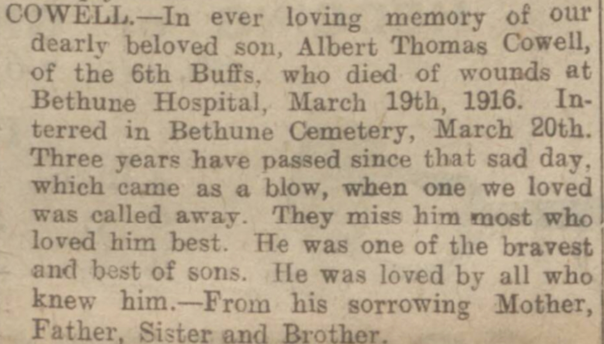
1911 UK Census - page 1
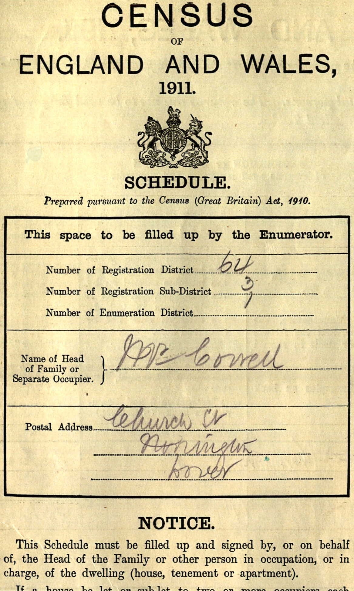
1911 UK Census - page 2

1901 UK Census
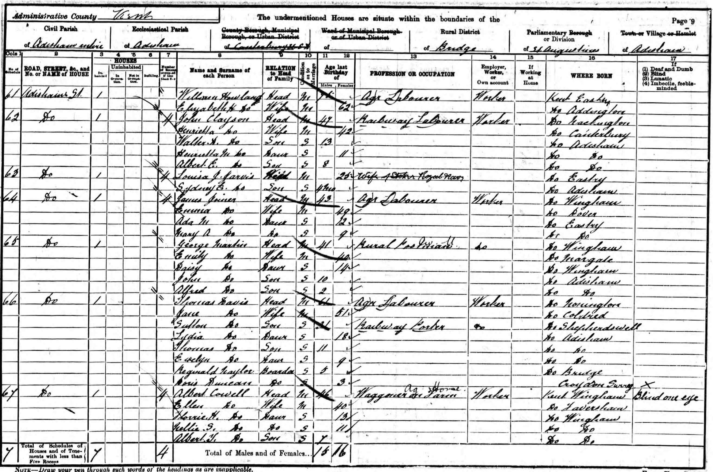
WW1 record - page 1
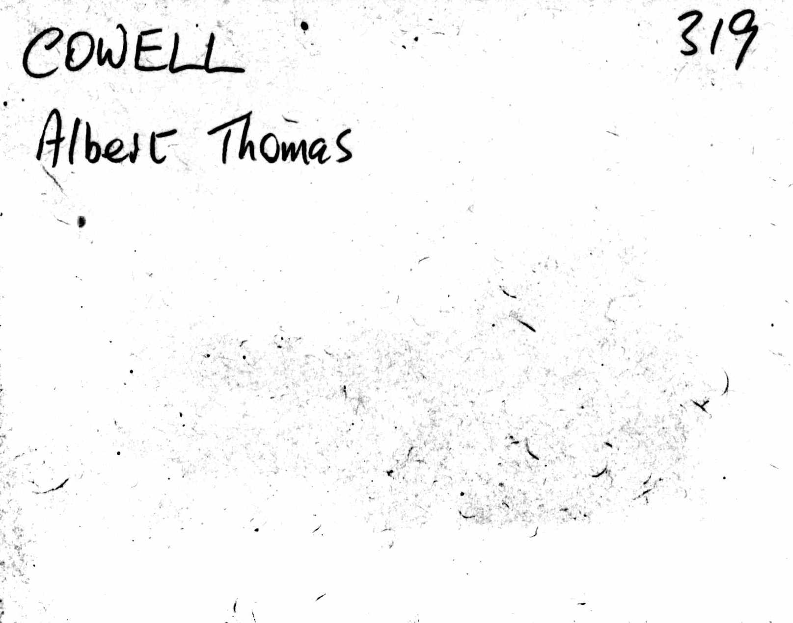
WW1 record - page 2
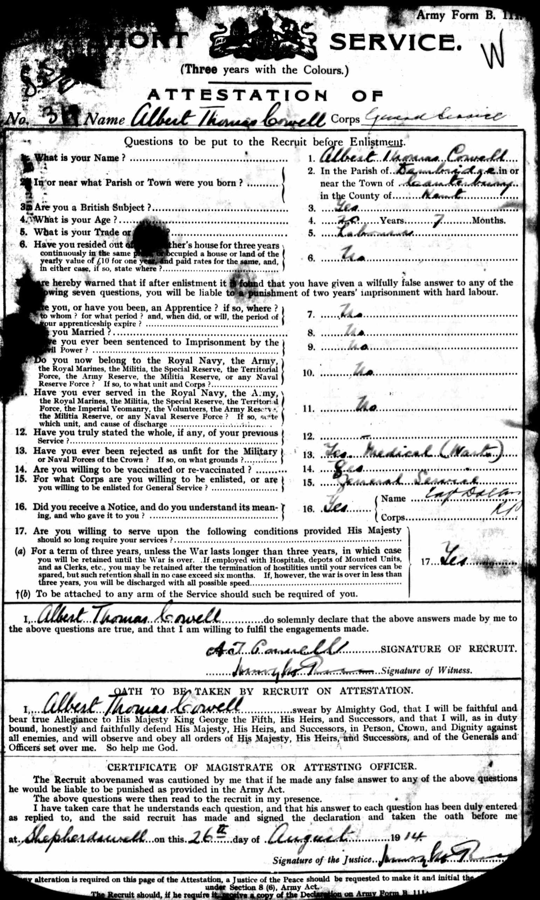
WW1 record - page 3
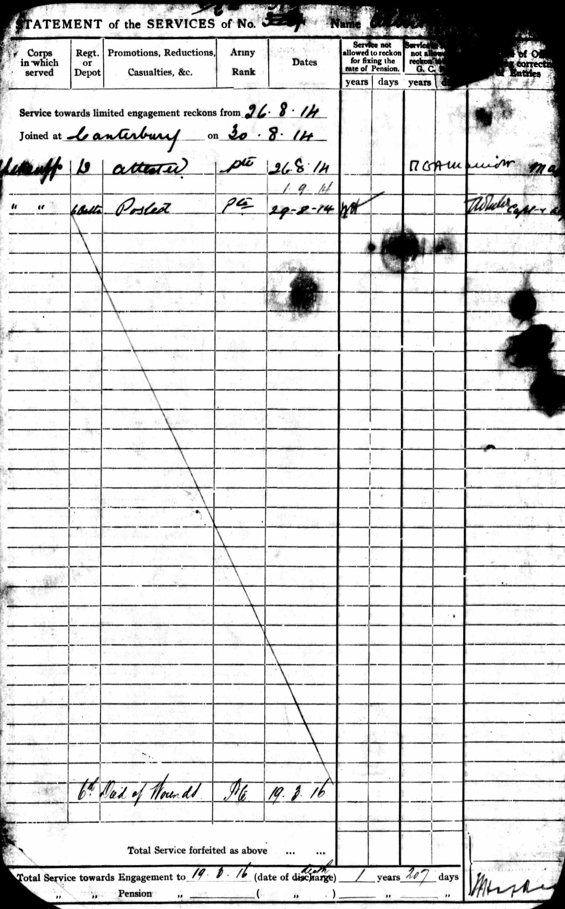
WW1 record - page 4
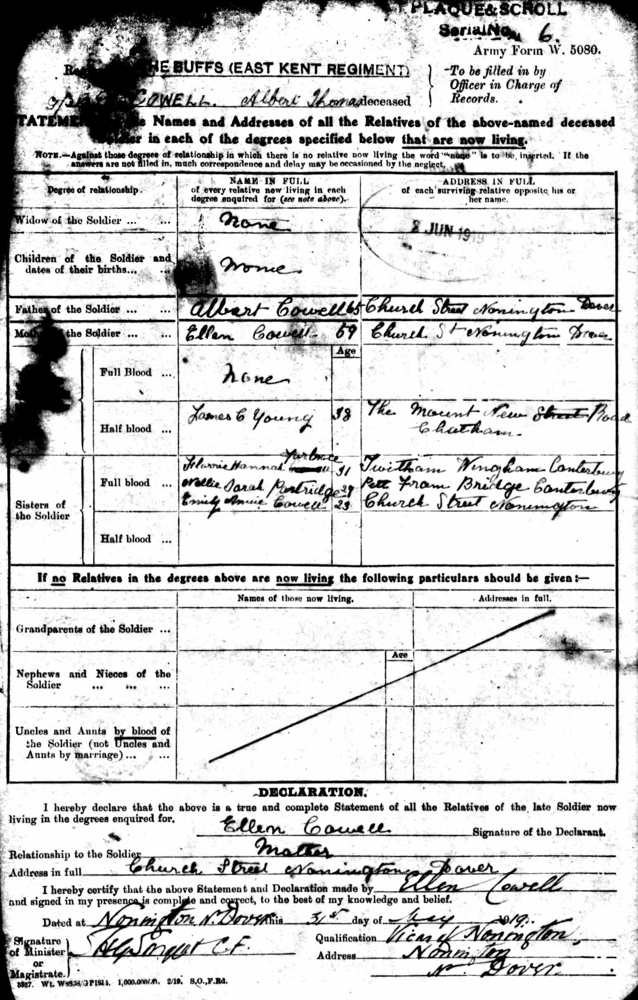
WW1 record - page 5
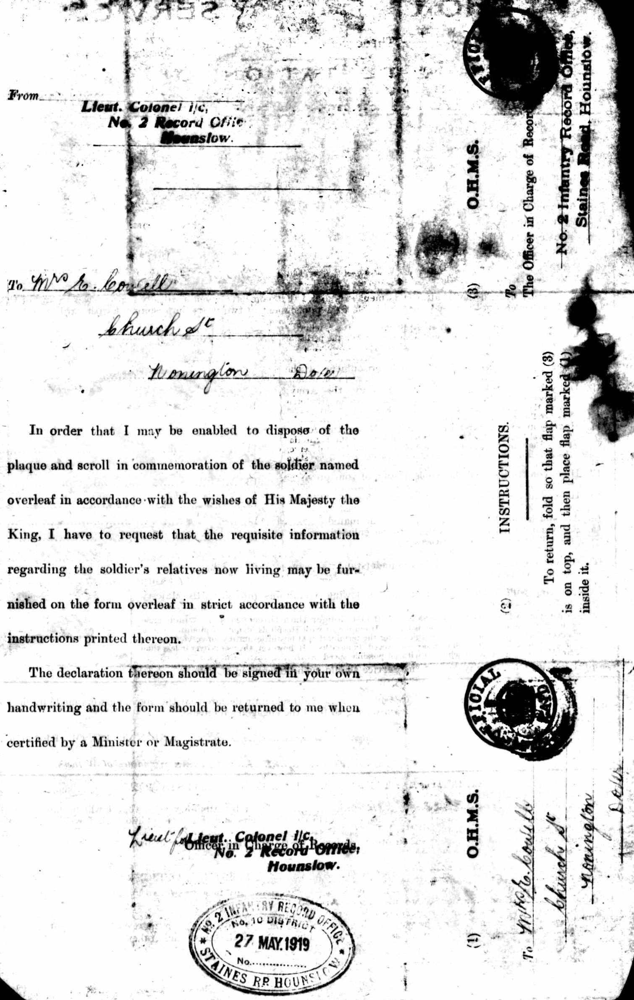
WW1 record - page 7
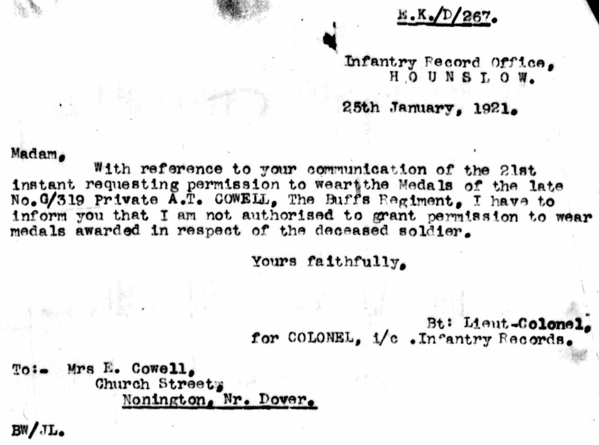
WW1 record - page 6
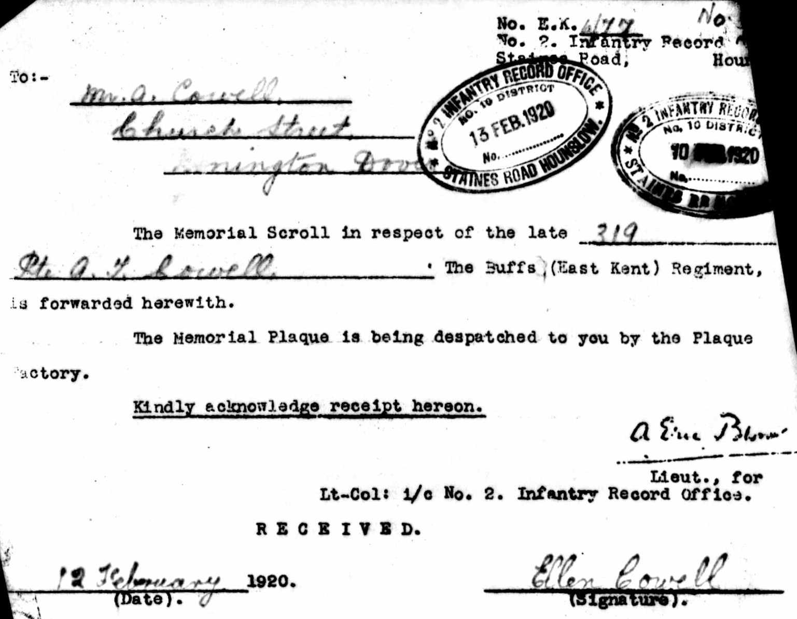
WW1 record - page 8

WW1 record - page 9
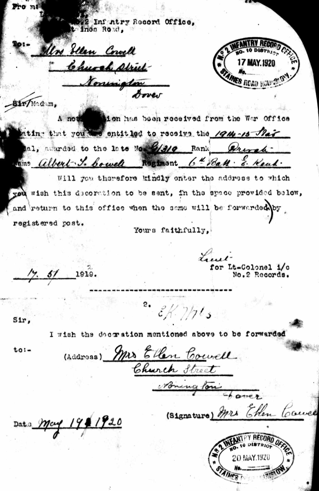
WW1 Record - page 10
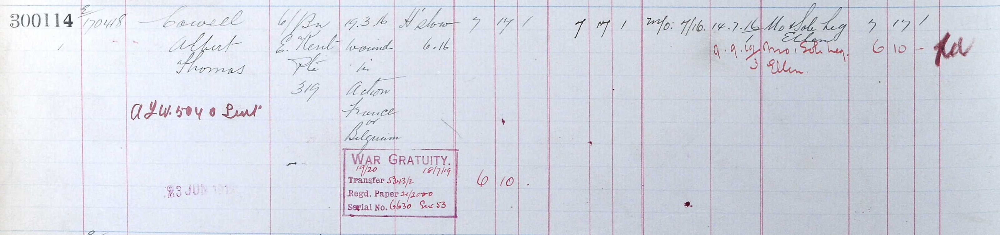
Nonington War MEMORIAL
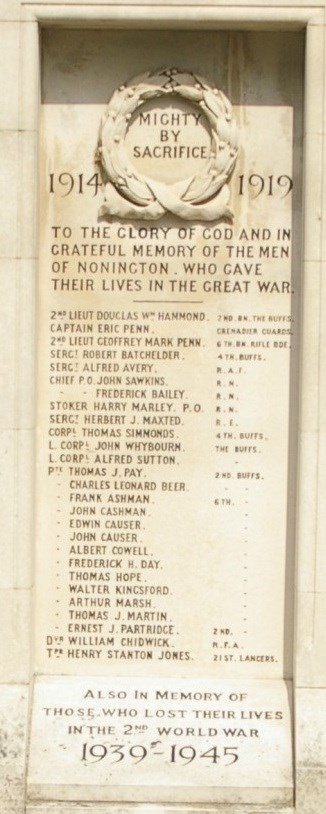
England & Wales births 1837-2006 - BMD/B/1894/2/AZ/000126/200
1901 England, Wales & Scotland Census - GBC/1901/0005470344
1911 Census for England & Wales - GBC/1911/RG14/04560/0013/3
Soldiers died in the Great War 1914-1919 - GBM/WWISD/0635429
British Army Service Records - GBM/WO363-4/7386955/41/914
Britain, Campaign, Gallantry & Long Service Medals & Awards - GBM/MCI/0984170
British Army Service Records - GBM/WO97/4595/380503
British Army Service Records - GBM/WO363-4/7303311/41/948
Family Tree

Generated by Ged2Site. Last updated on Jul 20, 2025